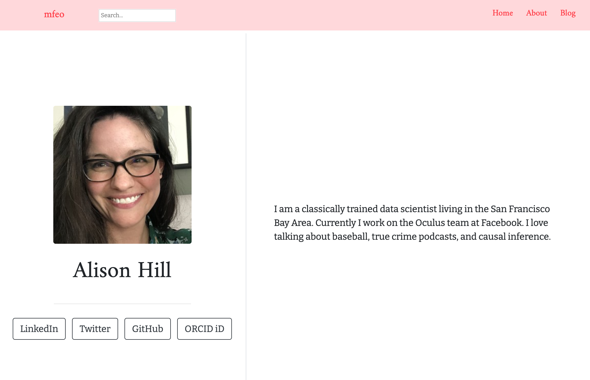
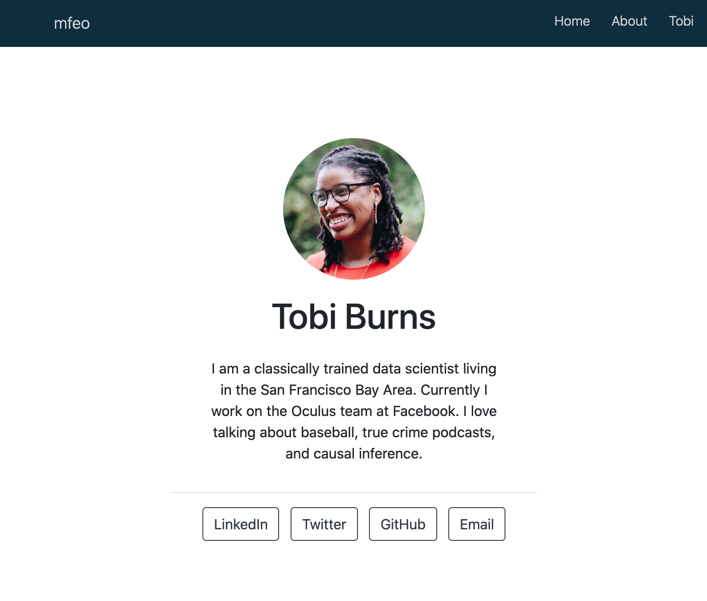
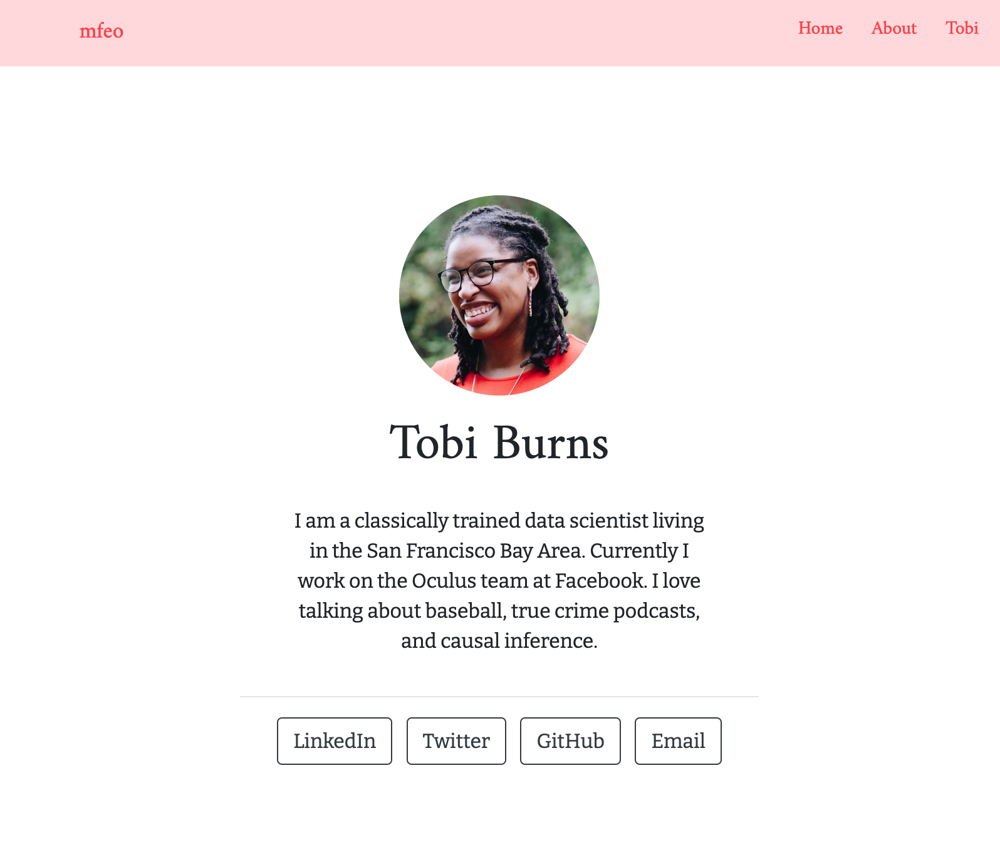
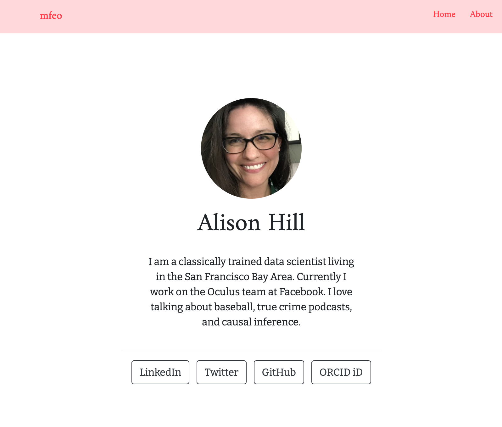
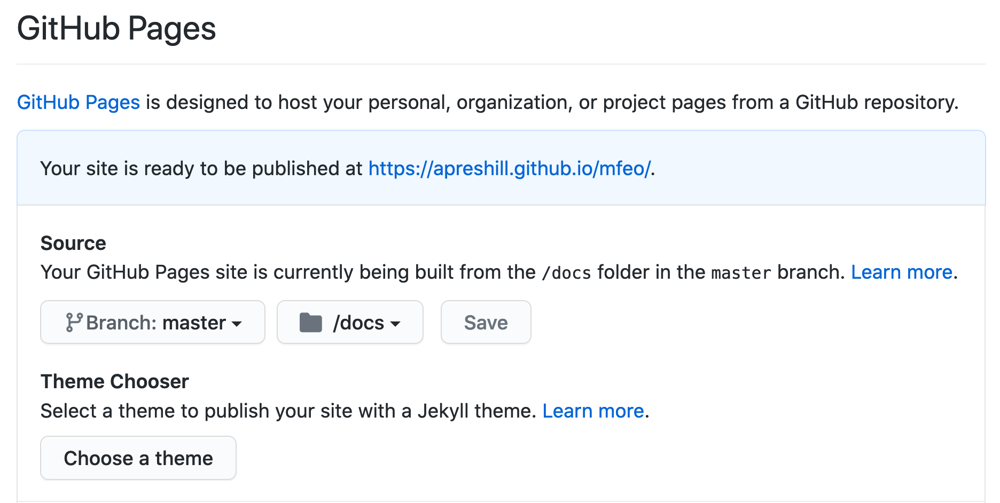

M-F-E-O: postcards + distill

This is a very brief “postcard to myself” about how to use the new postcards package by Sean Kross. What problem does postcards solve?
“Create simple, beautiful personal websites and landing pages using only R Markdown.”
— postcards README.md
Postcards includes four templates:
- Jolla,
- Jolla Blue,
- Trestles, and
- Onofre.
You can see postcards::trestles in action here: http://jtleek.com/
And here (this is where we are headed!):

Distill is a package that also helps you make simple, beautiful websites and blogs using only R Markdown. They are M-F-E-O (‘made for each other’: this is a “Sleepless in Seattle” reference with sadly, a complete lack of video to support). But if you’ve seen the movie this scene may sound familiar:
Becky: So I mailed your letter.
Annie: “Dear Annie, thanks for your letter. It was great. You sound neat. We’re very excited about meeting you in New York on Valentine’s Day and seeing if we are M-F-E-O. See you soon. Sleepless in Seattle.”
Becky: M-F-E-O?
Annie: “Made for each other.”
Becky: It’s cute. It’s like a little clue. So he can’t write. Big deal. Verbal ability is a highly over-rated thing in a guy and our pathetic need for it is what gets us into so much trouble.
— Sleepless in Seattle, script from https://plantyourstory.com/mfeo-its-like-a-little-clue/
Consider this post like a little clue (I’m using it as a sandbox before updating our distill documentation for this new feature). Here is our existing signpost in the distill docs. With the development versions (currently) of three packages now, you can embed a postcards page within your distill site. This means the page will come with all your distill goodies like site navigation, theme, and google-analytics support.
Pre-requisites
You’ll need the development versions of two packages:
- distill (v >= 1.2) (see: https://pkgs.rstudio.com/distill/news/index.html#distill-v12-development)
- rmarkdown
Use the remotes package to install development versions:
remotes::install_github("rstudio/distill")
remotes::install_github("rstudio/rmarkdown")
Plus the CRAN version (v >= 0.2.0) of the postcards package.
install.packages("postcards")
Make a website
In RStudio, create a new project using File > New Project > New Directory > New Project. Then, inside your new empty project, use your R console to do the following:
library(distill)
create_website(dir = ".", title = "mfeo", gh_pages = TRUE)
At this point, I recommend closing RStudio completely and opening up your project again. This way you should see the “Build” tab.

Now build your site! You should see the “boilerplate” website template at this point.
Add a postcard
In your R console, use the postcards package to create a new postcard:
create_postcard(file = "tobi.Rmd") # future name of .Rmd file
Alternatively, you could use distill::create_article() to make a new page. To make a postcard, specify the template (one of: jolla, jolla-blue, onofre, trestles) and package = 'postcards':
create_article(file = "tobi", # future name of .Rmd file
template = "jolla", # name of template
package = "postcards") # package that includes the template
Let’s add a link to our new file in the top navbar. Open up your _site.yml file and add:
name: "."
title: "mfeo"
description: |
mfeo
output_dir: "docs"
navbar:
right:
- text: "Home"
href: index.html
- text: "About"
href: about.html
- text: "Tobi" # add
href: tobi.html # add
output: distill::distill_article
Since my file is named tobi.Rmd, that means the rendered file will be tobi.html, so that is my href key in the _site.yml. If you save that file, you should see your website refresh, and look something like this!

Add a theme
For fun, let’s go ahead and add a custom distill theme while we’re at it.
create_theme("postcards")
This should print to your R console:
v Created CSS file at postcards.css
o TODO: Customize it to suit your needs
o TODO: Add 'theme: postcards.css' to your site or article YAML
See docs at <https://rstudio.github.io/distill/website.html#theming>
I want a full-site theme, so I added theme: postcards.css to my _site.yml file. I followed the distill docs on theming
here. Re-build my website, and now I see:

Switch the homepage
Now you may be wishing that your postcards page was your homepage- the place where visitors first land when they visit your website. The homepage in a distill website is named index.Rmd, so we need to remove the current index.Rmd file and replace it with tobi.Rmd. But we cannot just rename the files…
If you open up index.Rmd, you should see this yaml:
---
title: "mfeo"
description: |
Welcome to the website. I hope you enjoy it!
site: distill::distill_website
---
That site key is very important to keep in the index.Rmd file. Steps:
- Let’s start by adding
site: distill::distill_websiteto the yaml of your postcards page, mine is namedtobi.Rmd. - After doing that, you can delete
index.Rmd. - Next, rename
tobi.Rmd->index.Rmd. - Finally, clean up your
_site.yml- you can remove the link we added above totobi.html.
Re-build your site and Tobi’s shining face should greet you from the homepage!
Fill-in your postcard
Of course, you can add your own image file to the project root at this point, and then personalize your index.Rmd using the postcards template:
---
title: "Alison Hill"
image: "alison.jpg"
links:
- label: LinkedIn
url: "https://www.linkedin.com/in/alisonpresmaneshill/"
- label: Twitter
url: "https://twitter.com/apreshill"
- label: GitHub
url: "https://github.com/apreshill"
- label: ORCID iD
url: "https://orcid.org/0000-0002-8082-1890"
site: distill::distill_website
output:
postcards::jolla
---
Here is my “after”:

Add a blog
Back in your console, we can add a blog, using distill:
create_post("welcome")
If you do this with a blog already, it just adds a single post. But if you do this without posts set up, it does some nice things for you:
-
Creates a directory called
_posts/to hold all your future blog posts. -
Creates a new post with a “slug” including the date and the name of the post (here, mine was
"welcome").
Your new post should open up - go ahead and knit this post. Posts in distill need to be knit intentionally, so they will never be automatically built when you rebuild your website.
We also probably want to add a listing page to list all our blog posts. Do this by adding a blank .Rmd file to your project root, I’ll call mine blog.Rmd but there is no magic to this file name:
file.edit("blog.Rmd")
Then open up your new blog.Rmd and add a YAML (no content below the YAML):
---
title: "Blog" # any name you want here
listing: posts # do this exactly
---
Finally, add a link to your blog in your upper navbar so people can actually find it! Do this by editing _site.yml one last time (remember, since my listing .Rmd is named blog.Rmd, then the href I want to link to is blog.html):
navbar:
right:
- text: "Home"
href: index.html
- text: "About"
href: about.html
- text: "Blog" # add
href: blog.html # add
Now, admire your final polished product!
Switch your postcard
Let’s say you decide you want to switch it up and use the trestles theme, instead of jolla. Easy. Open up your index.Rmd and find these lines in the YAML:
---
output:
postcards::jolla
---
And change to:
---
output:
postcards::trestles
---
Re-build your site!
Publishing
I won’t be able to cover all the publishing options here, but you can read up on the options for
publishing distill websites here. If you want to take a site like mine that you built, I recommend GitHub Pages. You can use the usethis package to run:
usethis::use_git()
usethis::use_github()
usethis::use_github_pages() to turn on and/or (re)configure GitHub Pages!
Then in the GitHub project, navigate over to “Settings” and scroooooooll down to choose:

For this to work, make sure your site is building to docs/ locally, and that you are committing and pushing the docs/ directory to GitHub.
Maggie Ma
Aspiring Data Scientist & Geospatial Analyst
I’m a statistician, map enthusiast, and life-long learner who loves generating data-driven insights and creative visualizations.